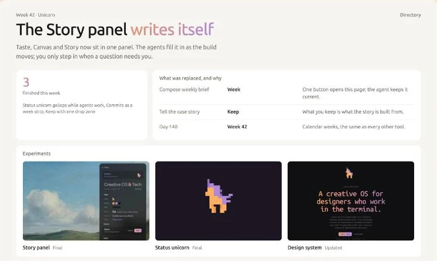
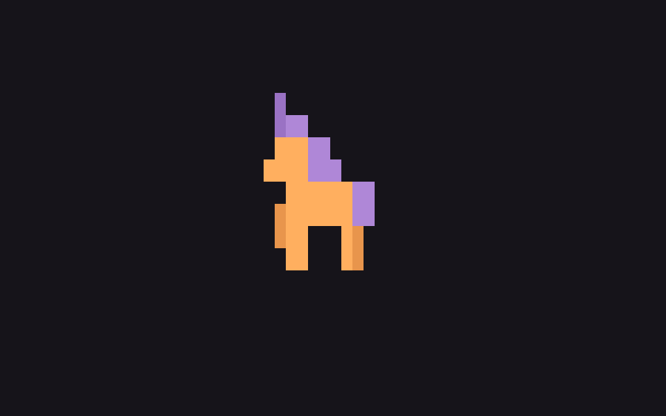
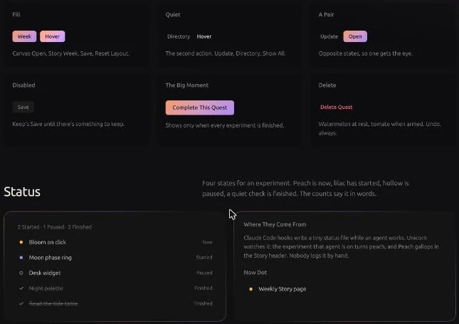

Week 42 · UnicornDirectory
The Story panel writes itself
Taste, Canvas and Story now sit in one panel. The agents fill it in as the build moves; you only step in when a question needs you.
Hear the Story
3finished this week
Status unicorn gallops while agents work, Commits as a week strip, Keep with one drop zone
What was replaced, and why
- Compose weekly briefWeekOne button opens this page; the agent keeps it current.
- Tell the case storyKeepWhat you keep is what the story is built from.
- Day 140Week 42Calendar weeks, the same as every other tool.
Experiments
Still true?
- Keep one Story page per build?
- Show the week strip when Commits is minimized?
To-do
- Weekly Story pageIn motion
- Title Case sweepIn motion
- Showcase screenshots
Keep4



Kept this week.
Agents right now
Figma MCP both ways
Canvas reads the build and writes back to the design system file.
Week pages on their own
A new build or a new keep refreshes this page.
Unicorn commits this week
29
MTWTFSS